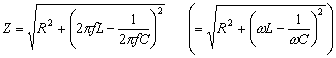
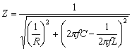

LRC串聯/並聯電路阻抗
程式編寫日期: 2006年5月24日
程式 (共52字)
0YA + ( B^( 4Y - 2 ) + ( ( 2πAC )^( 2Y - 1 ) - ( 2πAX )^( 1 - 2Y ) )2 )^( Y - . 5 )
SAVE PROG1 或 PROG2 (SRP-285II計數機)
STO EQN (HP 30S計數機)
LRC 串聯電路公式

LRC 並聯電路公式

例題1: 在LRC串聯電路中，若頻率為50Hz，電阻為2Ω，感抗為0.07H及容抗為25μF (25×10-6F)，電路的阻抗。
SRP-285II 按法:
按 P/V RCL，再按 ← 選擇正確的PROG，再按 = = 1 = (1代表計算串聯電路)
50 = 2 = 0.07 = 25 EXP - 6 = (顯示阻抗Z為105.3518Ω)
HP 30S 按法:
按 VRCL，再按 ← = = 1 = (1代表計算串聯電路)
50 = 2 = 0.07 = 25 EXP - 6 = (顯示阻抗Z為105.3518Ω)
例題2: 在LRC並聯電路中，若頻率為50Hz，電阻為2Ω，感抗為0.07H及容抗為25μF (25×10-6F)，電路的阻抗。
SRP-285II 按法:
按 P/V RCL，再按 ← 選擇正確的PROG，再按 = = 0 = (0代表計算並聯電路)
50 = 2 = 0.07 = 25 EXP - 6 = (顯示 阻抗Z為1.99436Ω)
HP 30S 按法:
按 VRCL，再按 ← = = 0 = (0代表計算並聯電路)
50 = 2 = 0.07 = 25 EXP - 6 = (顯示 阻抗Z為1.99436Ω)
注意事項: 在輸入每一個數據前請先按CL清除之前數據，否則可能出錯，不過若果你輸入的數據的長度等於或長於原先數據的長度，亦可以不按CL。另一個方法是在執行程式之前先按 2nd CL-VAR清除所有數據。